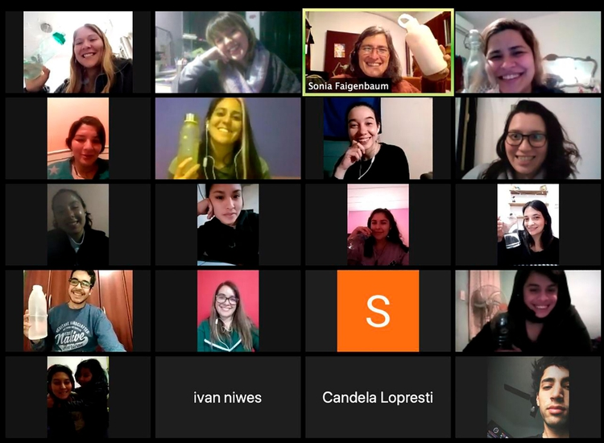

Los oficios digitales más buscados del mercado laboral y la oportunidad de la Argentina
PUBLICADO EL 24 DE OCTUBRE DE 2020 - AUTOR Julieta Schulkin - INFOBAE
En 2020, LinkedIn detectó cuáles son los 10 puestos de trabajo más demandados en la plataforma durante la pandemia por COVID-19. En consecuencia, lanzó una serie de cursos gratuitos disponibles hasta el 31 de marzo de 2021. Según la red social laboral, para 2025 se crearán 149 millones de trabajos vinculados a áreas de tecnología e innovación.
En este sentido, y considerando los más de 41 millones de personas (cifra de julio de 2020) que perdieron su trabajo tras la pandemia en América Latina, según la Organización Internacional del Trabajo (OIT), aprender un oficio digital será clave para (re)insertarse en el mercado laboral.
Los cursos en línea de LinkedIn (para obtener certificación, hay que pagar) son de desarrollador de software, vendedor, gestor de proyecto, administrador de redes, especialista de servicio al cliente, experto en marketing digital, especialista en soporte IT, analista de datos, analista financiero y diseñador gráfico.
Qué es un oficio digital
Son nuevas posiciones que demandan hoy las empresas y que surgen a partir de la transformación digital que estamos viviendo. El mercado laboral cambia y surgen oficios digitales que requieren formación.
"Así como en el pasado tener un oficio podía ser electricista, costurero o cocinero, hoy los oficios tienen que ver con la administración y atención del comercio electrónico, las redes sociales, el desarrollo web y la publicidad digital”, señala a Infobae Demian Niedfeld, cofundador y coordinador general de Semillero Digital y CEO de Ukelele, agencia de marketing para ecommerce.
Semillero digital es una iniciativa sin fines de lucro, una comunidad de profesionales digitales que brindan cursos gratuitos de oficios digitales, para personas de entre 18 y 35 años en situación de vulnerabilidad social.
“Los oficios digitales cubren un amplio abanico que va desde la rama de tecnología y programación, diseño web, comercio electrónico y publicidad digital. En Semillero Digital estamos desarrollando cursos en estos dos últimos sectores que debido a la cuarentena, tuvieron un crecimiento exponencial lo que conlleva a un enorme crecimiento de la demanda de empleo”, explica.
Sin embargo, según explica, los talentos y las personas preparadas para poder cubrir esos puestos no crecen al mismo ritmo que crece el mercado. Es ahí desde donde comienza la iniciativa de Niedfeld. “Vemos una oportunidad para poder brindar trabajo a jóvenes de barrios marcados por la pobreza económica, para que se capaciten en estos nuevos oficios digitales y puedan ocupar esa demanda de empleo que la transformación digital está generando", sostiene.
Desde 2019, primero de forma presencial y este año virtual, Semillero Digital ofrece cursos cortos, similares a los que brindan las academias digitales privadas. Cada estudiante puede elegir por Community Manager, Operador en Mercado Libre, Desarrollo de Tienda eCommerce y Optimización de Publicidad Digital (Facebook, Instagram & Google Ads).
“Lo que más nos enorgullece de Semillero es que generamos esta capacitación en estos chicos que hasta hoy estaban alejados de este mundo laboral digital, con profesionales digitales voluntarios, que tienen ganas de donar su tiempo, para enseñar y acompañar a estos chicos y así contribuir a ampliar oportunidades y acortar la brecha digital y por lo tanto la pobreza económica”, señala.
La oportunidad en la Argentina

Demian Niedfeld, cofundador y coordinador general de Semillero Digital
Según Niedfeld, en el sector de oficios digitales, la Argentina tiene una oportunidad histórica. “Tenemos talento digital de nivel internacional, como demuestra el origen de más de 5 empresas unicornio, sumado a que estamos a un huso horario similar a USA y Europa que con la comunicación por video conferencia podríamos atender empresas y trabajar para cualquier lugar del mundo”, expresa.
Entonces, plantea que si se logra expandir el talento digital, hacer crecer la base de personas aptas para ingresar a este mercado laboral, con una clara oportunidad de cambiar la matriz productiva, el país podría hacer crecer su economía.
“Cambiar la matriz productiva es comenzar a consolidar la exportación a partir de la venta de servicios de la economía del conocimiento, como primera fuente de ingresos de exportación, y dejar de pendular entre el modelo agroexportador que no genera trabajo calificado o el de industria tradicional nacional que su éxito suele depender de mercado local cerrado a la importación”, opina.
Voluntarios y aprendices
Los cursos de oficios digitales de Semillero Digital, en Zoom en 2020
“Cuando me sumé a Semillero, entendí que no se trata únicamente de juntar conocimientos y experiencia de profesionales del ámbito digital, para ponerlos a disposición de estudiantes de entornos vulnerables. La impronta tiene además una cuota importante de generación de vínculos entre personas para colaborar y crecer juntas. Aquí todos aprendemos y todos enseñamos”, señala a Infobae Alejandro Klingenfuss, coordinador de mentorías en Semillero Digital, director de la Comisión de Marketing de CACE (Cámara Argentina de Comercio Electrónico).
Por su parte, Maira Fabro, diseñadora gráfica especialista en redes sociales y cofundadora y profesora de Semillero Digital dice: “Gracias a más de 10 años de experiencia trabajando en el mundo publicitario viví la transformación digital de primera mano descubriendo que lo más importante para poder crecer y desarrollarse en el rubro, es contar con las personas indicadas a nuestro lado para que nos guíen y apoyen durante el aprendizaje del día a día”.
Maria Sol Carmiglio, 22 años, de Burzaco, alumna de Semillero, señala a Infobae: “En mayo de 2019 me quedé sin trabajo y acudí a la red de egresados de Fundación Forge en busca de un nuevo curso u oferta laboral. Hice el curso de operador de ventas de Mercado Libre y ahora estoy haciendo el de Community Manager, debo admitir que entre todos es mi favorito. Gracias a esta trayectoria, hoy estoy trabajando con mi primer cliente como Community Manager”.
Leonardo Ustares, de 24 años, del barrio de Flores en Capital Federal, es egresado de los cursos de Google Ads y Operador de MercadoLibre. “Este año en la cuarentena, aprendí Mercado Libre ya que nunca supe manejarlo bien. Desde el minuto uno, los profes me transmitieron confianza y se pusieron a mi disposición. Sin ir más lejos, yo no tenía nada; iba un rato antes a clase para hacer la tarea, hasta que Juan Pablo uno de los profes, me regaló una PC para que trabaje en casa también. Ese fue el gesto más grande de compromiso que vi de ellos”, señala.
Para estudiar en Semillero Digital o postularse como voluntario, se puede acudir a su sitio y en ambos casos llenar un formulario para postularse.